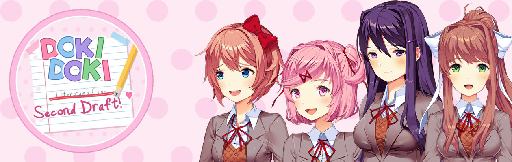
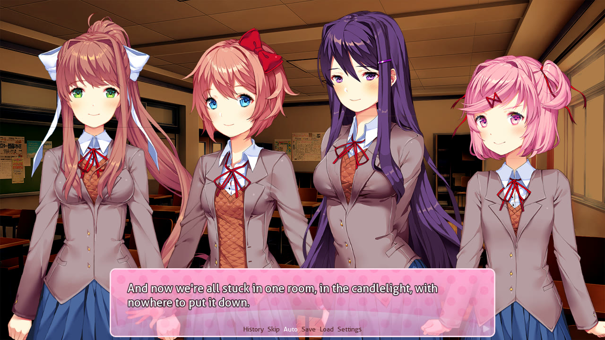

Sayori
Your neighbour since you were six
Sets four alarms. Only the duck one works. Has been brave by accident her whole life, and this year she's trying to be brave on purpose.
Same club. Kinder story.
A free, full-length, wholesome fan mod for Doki Doki Literature Club!
A whole school year with Sayori, Natsuki, Yuri and Monika. No horror. No tricks.
Work in progress: everything you see is subject to change.

▶Plays from YouTube when you click it.
Four girls, one clubroom, far too many cupcakes. Every one of them is routable, Monika included.
Your neighbour since you were six
Sets four alarms. Only the duck one works. Has been brave by accident her whole life, and this year she's trying to be brave on purpose.

Baker, manga expert, not cute
Runs a kitchen like a very small, very loud army. Will tell you your piped whale looks sad. Will also save you the lighthouse cupcake.

Horror novels, tea, eleven candles
Texts like she's writing letters ("Warm regards, Yuri"). Quiet, until she starts talking about a book, and then you never want her to stop.

Club president, laminates everything
Perfect at speeches, debates and paperwork. Terrible at claw machines. Has been writing a song since April and can't find the ending.
Group chats, late-night DMs and voice calls in a WhatsApp-style phone. From Act 4, all four girls text you every night.
DDLC's word picker, rebuilt for four girls and four tastes, with themed word sets for each chapter.
Spend your afternoons with whoever you like: baking, tea, the piano, or watering the hallway flowers.
Hidden Love and Friendship for each girl, bold or patient romance, and small moments that come back later.
The girls take on each scene's light: sunsets, rainy days, candlelight, fireworks. Whoever's talking steps forward.
From DDLC's own pink box to Midnight, Sepia and a theme for each girl, some with her handwriting.
Plus a CG gallery, a music room and an endings book with 16 endings to find.
Pick your name and your pronouns: he, she or they. Show your Act on Discord with Rich Presence.
Joining the club, cupcakes, your first poem.
Poem day, free time, a festival plan.
A day out with the club, then a day with each girl.
A rainy June, nightly texts, and a storm.
The week before the festival. A proper date. A Charter.
Two festival days, and who you watch the fireworks with.
Summer, autumn, winter and spring with the girl you chose, or with all of them.
Best, Romance and Missed for each girl, the Polycule, and a few secrets.
25 October 2026
The girls now take on each scene's light: lit from the sun's side at sunset, dimmer and bluer at night, glowing by candlelight. In group scenes, whoever is talking steps forward and the others are softly shaded.
Act 6, the festival, is written too: two days of café shifts, a stage, and the fireworks. Then a big round of playtest fixes from Aoi's notes.

24 October 2026
The festival is one week away and the club has a lot to do: banners, forty book cupcakes, a café, a song with no ending yet. And somewhere in between, some very important dates.
You can now go fast or take it slow: at key moments, choose to be bold or patient. (There may be achievements for both.)
22 October 2026
Acts 1 to 4 are playable right now, for free, on itch.io. About 40,000 words of club life: joining the club, the first poem day, Golden Week, and a rainy June that ends in a storm nobody can walk home through.
16 October 2026
Act 4 is written: a letter that didn't want to stay in a shoe locker, a rumour, and every night all four girls text you. Acts 1 to 3 also got about three times longer.

More devlogs (and sneak peeks you won't see anywhere else) are on our Discord.

Devlogs, Discord-only sneak peeks, bug reports, chapter feedback, poems, and a lot of duck emoji. Come say hi.
discord.gg/FV4pHRJVMUFree, always. Windows, macOS and Linux. Demo 0.4.0: Acts 1 to 4 (3 to 5 hours).
game folder and copy audio.rpa, fonts.rpa and images.rpa.game folder inside the Doki Doki Second Draft folder. (Don't copy scripts.rpa.)DokiDokiSecondDraft.exe (Windows), DokiDokiSecondDraft.sh (Linux) or the .app (Mac).Content: wholesome slice-of-life romance with a teen cast. Hand-holding, nervous confessions, a few sweet kisses. No horror, no jump scares, no fourth-wall breaking.